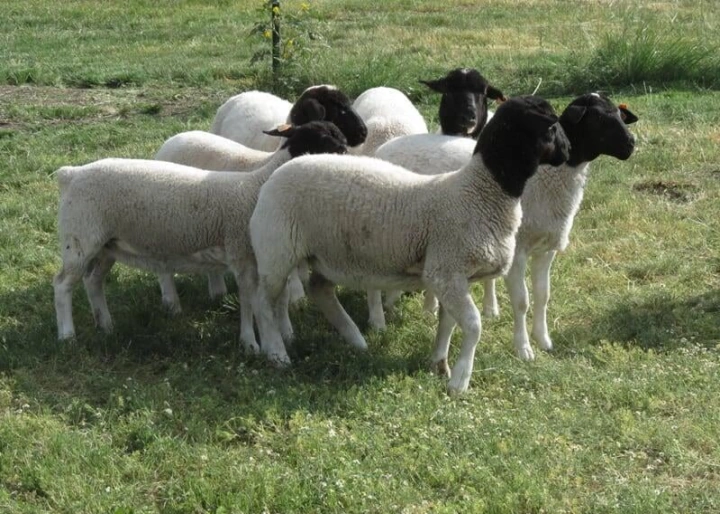
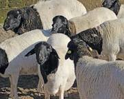
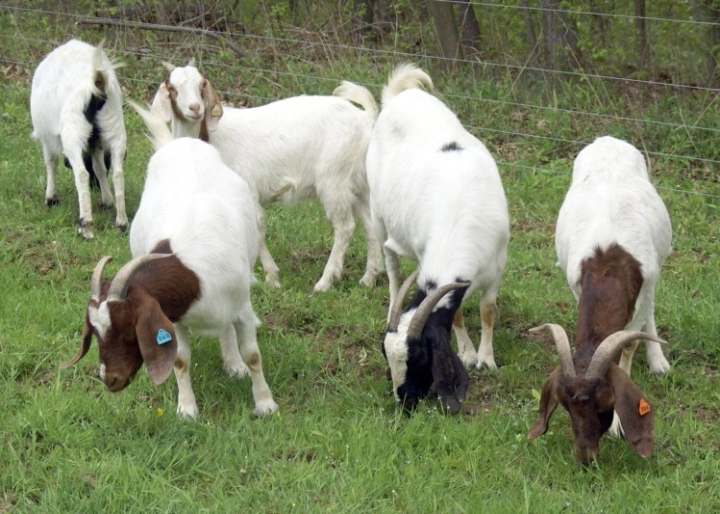
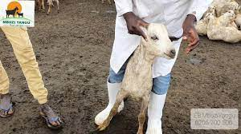
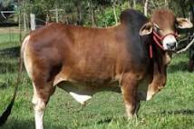

The breed has the characteristic black head (Dorper) as well as white heads (White Dorper). Furthermore the breed shows exceptional adaptability, hardiness, reproduction rates and growth (reaching 36 kg [~80 lbs]
at three and a half to four months) as well as good mothering abilities.
2.black head-persian

The Blackhead Persian is a polled breed with both sexes lacking horns. It has a black head, with long pendulous ears, and a black
neck and a white body, with a clear line demarcating the two colours. The rump and the base of the tail have an accumulation of fat.
boer goat

Boer goats are large, stocky animals with a white body and a red head, brown eyes, lop (downward-hanging) ears, backward-curving horns,
and strong, well-placed legs. Adult males often reach 160 kg (350 pounds), and females can weigh as much as 110 kg
galla goat

They tolerate heat and drought and have great teeth (which means they rarely need to be culled
due to worn-down chompers). The goats also produce a lot of nutritious milk and mature more quickly
sahiwa

The Sahiwal is one of the best dairy breeds in India and Pakistan. It is tick-resistant, heat-tolerant and noted for its high resistance to parasites,
both internal and external. Cows average 2270 kg of milk during a lactation while suckling a calf and much higher milk yields have been recorde
email us:deyasaitabau@gmail.com
direct-helpline:+254729533373
about kilimonet
kilimonet is a solo proprietorship that is committed to provide timely market prices,meteorological and climatological information and best livestock rearing practices to all herders and livestock dealers